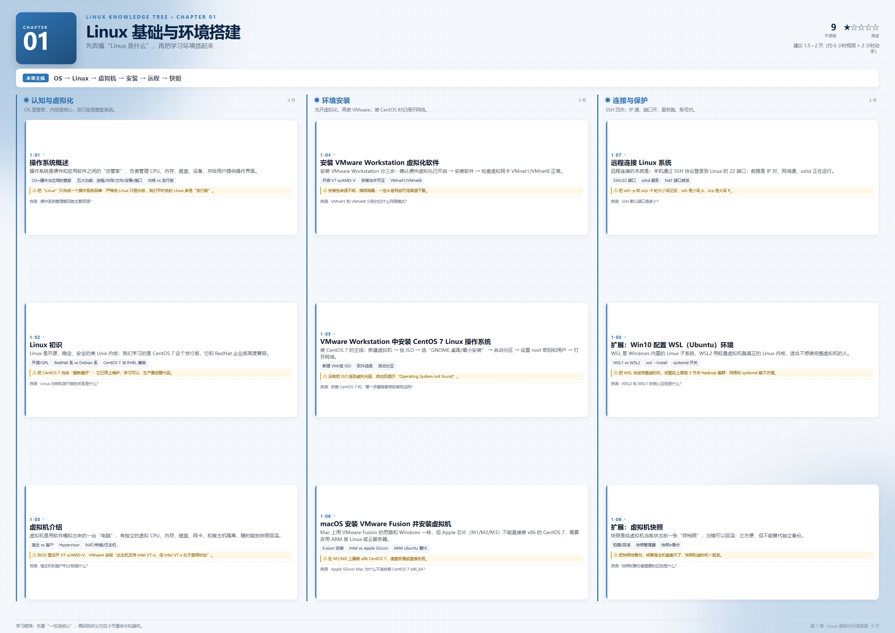
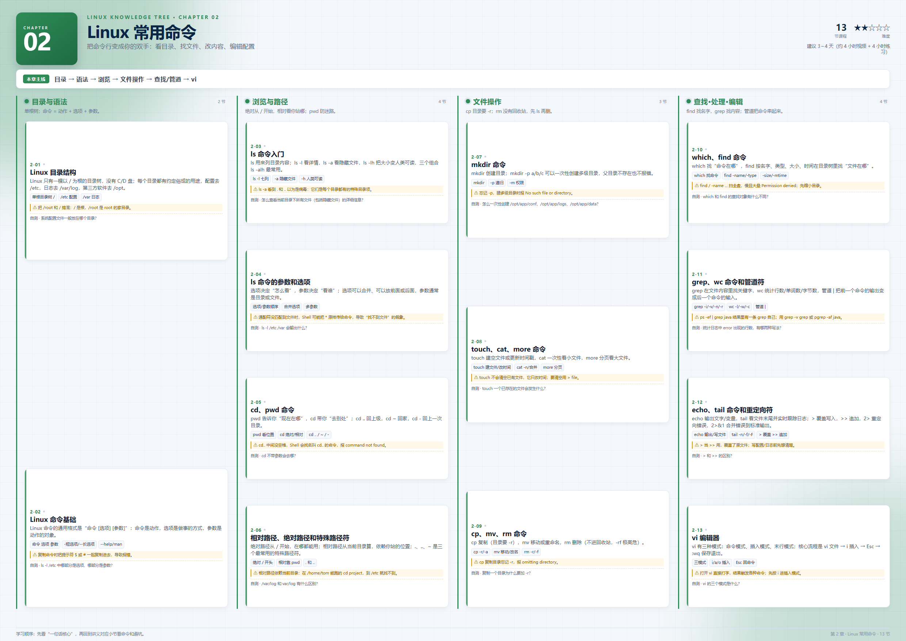
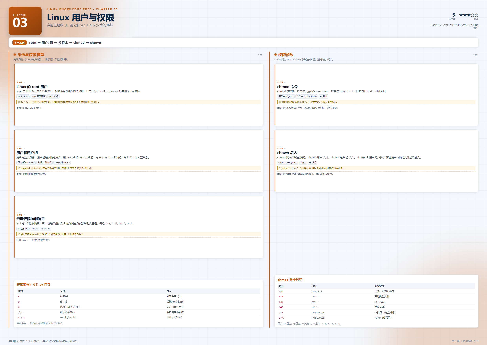
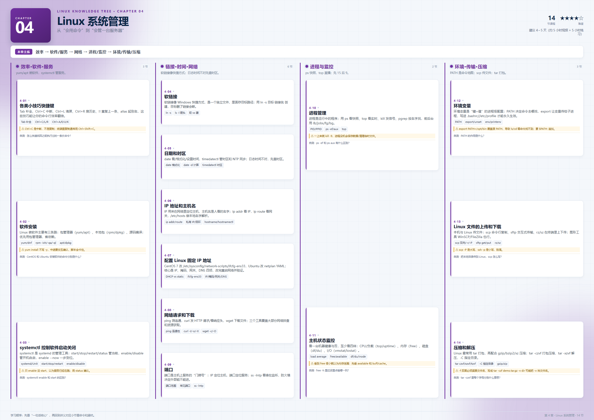
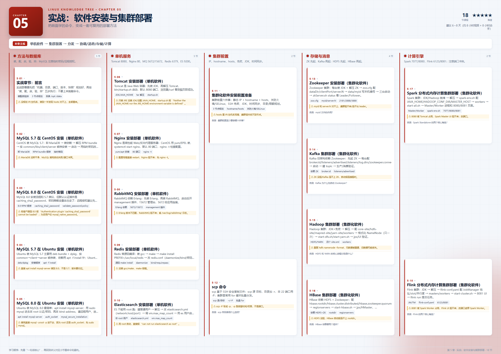

LINUX · KNOWLEDGE TREE
Linux 知识树
一张图建立框架，再按章看细节。建议先看总览，再点开第 1～5 章分图。
总览
查看原图 →
A3 横向打印效果最好；也可以直接在屏幕上放大查看。
分章详解
下载 7 页 PDF →

第 1 章 Linux 基础与环境搭建先弄懂“Linux 是什么”，再把学习环境搭起来


第 2 章 Linux 常用命令把命令行变成你的双手：看目录、找文件、改内容、编辑配置


第 3 章 Linux 用户与权限谁能进这扇门、能做什么：Linux 安全的地基


第 4 章 Linux 系统管理从“会用命令”到“会管一台服务器”


第 5 章 实战：软件安装与集群部署把前面学的命令，变成一套可复用的部署方法
P
知识树分章详解 PDF
封面 + 总览 + 5 章，每章一页。
I
知识树全图 PNG

1800 × 7728，手机上下滑动查看。